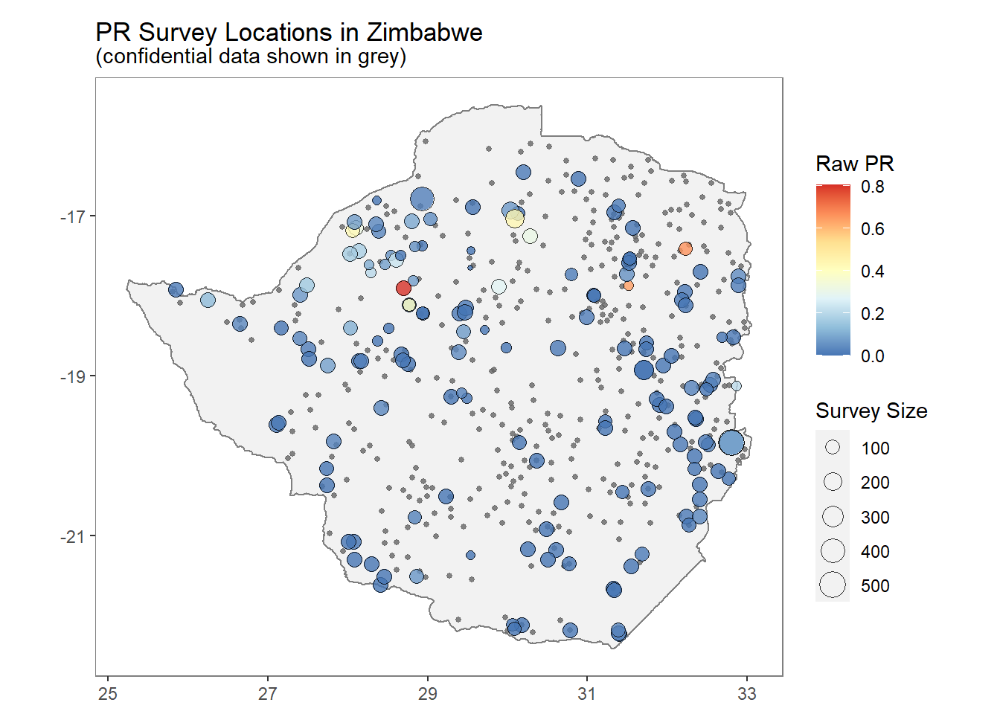
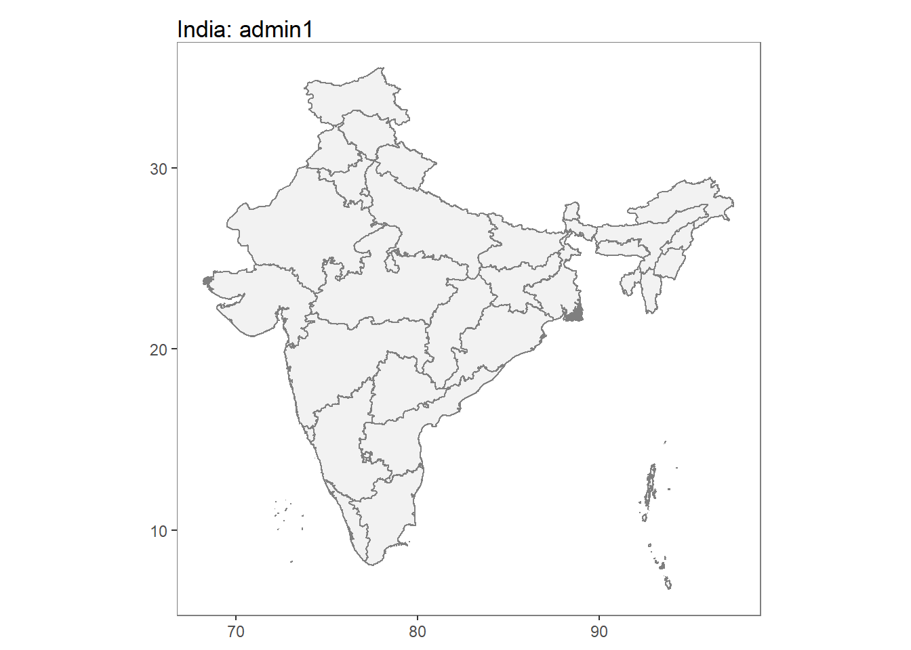
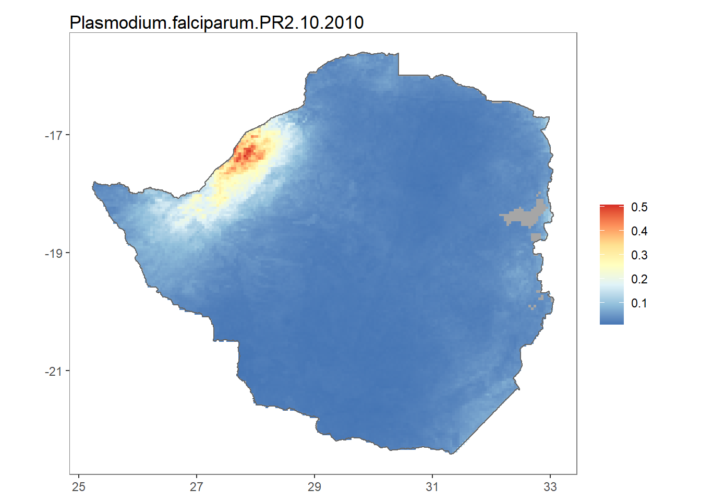
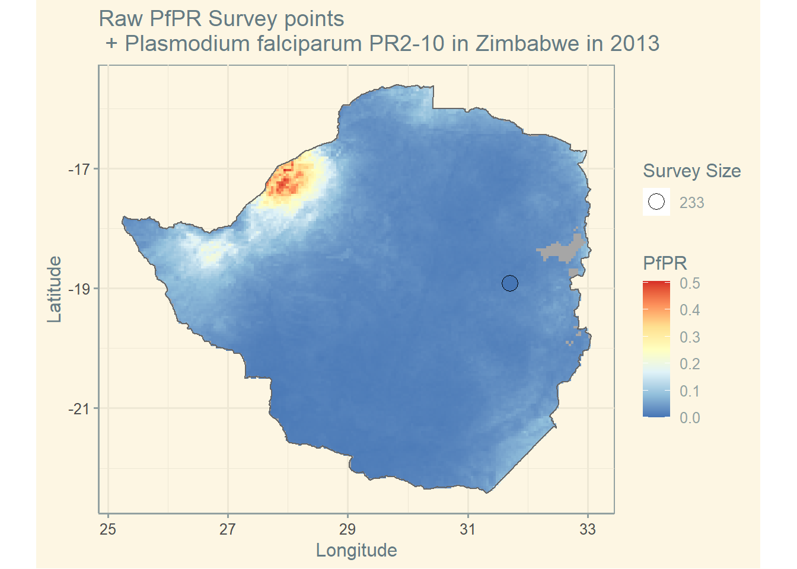
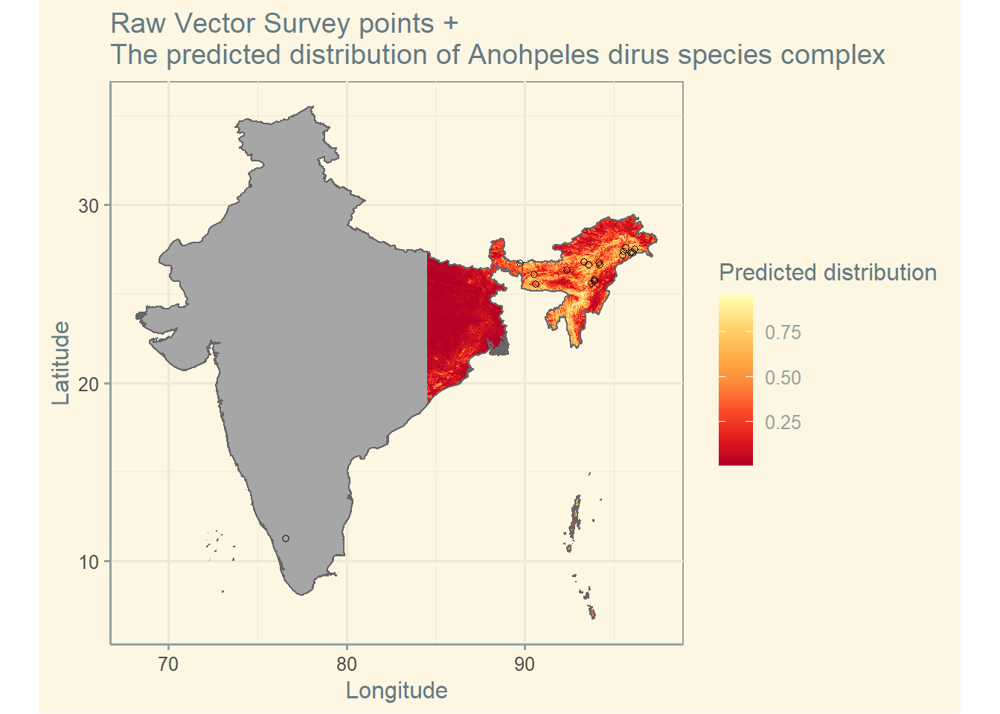

Malaria
Downloading and visualising parasite rate data
This is a tutorial for the mapAtlas package which enables users to download, visualize and manipulate global parasite rate survey data(Plasmodium and P.vivax) and modeled raster outputs. This package is to provide users of the R programming language with a convenient API to interact with the publicly available data.
Installation of malariaAtlas package
To download the data and the other functions required to visualize the same, you need the malarisAtlas package, which can be downloaded from CRAN using
install.packages("malariaAtlas")And the package can be loaded for usage of its functionalities as follows:
library(malariaAtlas)Available Data
The data can be explored interactively at data explorer. This can also be used for finding more information on raster data.
List of data present in the package
The listData() function from the mapAtlas package helps retrieve a list of all the available data to download.
We can download the data for any available country by using the function and passing values to its arguments.
listData(datatype = "pr points") The above syntax helps find all the countries that have PR survey points data, that can be downloaded. Or if you need the vector survey data for the countries that have raster data ,there are two ways you can do so:
listData(datatype = "raster")
#or
listRaster()If you need the list of all the countries that have the shapefiles data, there are two ways you can do so:
listData(datatype = "shape")
#or
listShp()Other Available functions
isAvaiilable_pris a function which confirms whether a specified country has a PR survey points for downloading or not. It can be used like thus,
isAvailable_pr(country = "Zimbabwe")For a country where the pr survey points are not available the following message will be displayed:
isAvailable_pr(ISO = "USA")isAvailable_vecis a function which confirms whether a specified country has vector occurrences data for downloading or not. This function can be used thus,
isAvailable_vec(country = "India")For a country where the vector survey points are not available the following message will be displayed:
isAvailable_vec(ISO = "USA")Available functions for dowloading and visualising data
- get* functions and autoplot methods
getPR(): downloads all the publicly available PR points for the country and returns it as a dataframe. The arguments included in this are country, ISO, continent,species. The species is string specifying the Plasmodium species for which we need to find the PR points,the options include: Pfor Pv or both. It can be used as thus
getPR(country = "Zimbabwe", species = "both") %>%
head(10) %>%
datatable(extensions = c('Scroller','FixedColumns'), options = list(
deferRender = TRUE,
#scrollY = 350,
scrollX = 350,
dom = 't',
scroller = TRUE,
fixedColumns = list(leftColumns = 4)
))getVecOcc(): downloads all publicly available vector points for the country ans returns it as a dataframe. The arguments included in this are country, ISO, continent, species. The species argument is a strong specifying the Anopheles species for finding the vector occurrences points, the options are: Anopheles….(specific species of Anopheles) or ALL.
getVecOcc(country = "India", species = "ALL") %>%
head(10)%>%
datatable(extensions = c('Scroller','FixedColumns'), options = list(
deferRender = TRUE,
#scrollY = 350,
scrollX = 350,
dom = 't',
scroller = TRUE,
fixedColumns = list(leftColumns = 4)
))autoplot.pr.points is an autoplot method to enable quick visualizing of the locations of downloaded PR points. It can be used thus:
ZM_PR_data <- getPR(country = "Zimbabwe", species = "both")
autoplot(ZM_PR_data)## OGR data source with driver: ESRI Shapefile
## Source: "C:\Users\acer\AppData\Local\Temp\RtmpwL1k0X\shp\shp5df0ac947f7\mapadmin_0_2018.shp", layer: "mapadmin_0_2018"
## with 1 features
## It has 8 fields
autoplot.vector.points: is an autoplot method to quickly and easily visualize the vector occurrence data foe a specifies country.It can be used thus:
IN_VEC_data <- getVecOcc(ISO = "IND", species = "ALL")
autoplot(IN_VEC_data)## OGR data source with driver: ESRI Shapefile
## Source: "C:\Users\acer\AppData\Local\Temp\RtmpwL1k0X\shp\shp5df051c41dd9\mapadmin_0_2018.shp", layer: "mapadmin_0_2018"
## with 1 features
## It has 8 fields
Since the package, when loaded also loads ggplot2 as its dependency, the functionalities of ggplot2 can be used to the above ggplot2 plots for more appeal and options.
p <- autoplot(ZM_PR_data,printed = FALSE)
p + scale_fill_gradientn(colors = rev(palettetown::pokepal('hoothoot',spread = 3))) +
theme_solarized()+
labs(x = "Longitude",
y = "Latitude")
- Modelled Shapefiles
getShp: downloads a shapefile for a specified country( or countries) and returns this as either a spatial Polygon or data.frame object.
IN_shp <- getShp(ISO = "IND", admin_level = c("admin1","admin2"))## OGR data source with driver: ESRI Shapefile
## Source: "C:\Users\acer\AppData\Local\Temp\RtmpwL1k0X\shp\shp5df02c436bc9\mapadmin_1_2018.shp", layer: "mapadmin_1_2018"
## with 36 features
## It has 12 fields
## OGR data source with driver: ESRI Shapefile
## Source: "C:\Users\acer\AppData\Local\Temp\RtmpwL1k0X\shp\shp5df0eb5199\mapadmin_2_2018.shp", layer: "mapadmin_2_2018"
## with 666 features
## It has 16 fieldsautoplot.MAPshp: builds autoplot method to enable quick mapping of downloaded shapefiles.
IN_shp <- as.MAPshp(IN_shp)
autoplot(IN_shp)
- Modelled Rasters
getRaster() : downloads publicly available MAP rasters for a specific surface and year, clipped to a given bounding box or shapefile.
ZM_shp <- getShp(country = "Zimbabwe", admin_level = "admin0")
ZMB_Pf <- getRaster(surface = "Plasmodium falciparum PR2-10", shp = ZM_shp, year = 2010)Note that to use downloaded rasters and shapefiles directly with autoplot, it must first be converted to the usable raster and shapefiles data.frames, hence we use the as.MAPraster() and as.MAPShp() respectively.
autoplot.MAPraster or autoplot_MAPraster: are autoplot methods to enable quick and easy mapping of all the downloaded rasters.
ZMB_Pf <- as.MAPraster(ZMB_Pf)
ZMB_shp_data <- as.MAPshp(ZM_shp)
autoplot(ZMB_Pf, shp_df = ZMB_shp_data) 
Combined Visuals
Using the above tools along with ggplot, simple comparison plots can be made.
- Example for PR survey points -
ZMB_shp <- getShp(country = "Zimbabwe", admin_level = "admin0")
ZMB_shp_df <- as.MAPshp(ZMB_shp)
ZMB_PfPR2_10 <- getRaster(surface = "Plasmodium falciparum PR2-10", shp = ZMB_shp, year = 2013)
ZMB_PfPR2_10_df <- as.MAPraster(ZMB_PfPR2_10)
p <- autoplot(ZMB_PfPR2_10_df, shp_df = ZMB_shp_df, printed = FALSE)
pr <- getPR(country = c("Zimbabwe"), species = "Pf")
p[[1]] +
geom_point(data = pr[pr$year_start==2013,], aes(longitude, latitude, fill = positive / examined, size = examined), shape = 21)+
scale_size_continuous(name = "Survey Size")+
scale_fill_distiller(name = "PfPR", palette = "RdYlBu")+
ggtitle("Raw PfPR Survey points\n + Plasmodium falciparum PR2-10 in Zimbabwe in 2013")+
theme_solarized()+
labs(x = "Longitude", y = "Latitude")
- Example for Vector points-
IND_shp <- getShp(country = "India", admin_level = "admin0")
IND_shp_df <- as.MAPshp(IND_shp)
IND_an_dirus <- getRaster(surface = "Anopheles dirus species complex", shp = IND_shp)
IND_an_dirus_df <- as.MAPraster(IND_an_dirus)
p <- autoplot(IND_an_dirus_df, shp_df = IND_shp_df, printed = FALSE)
vec <- getVecOcc(country = c("India"), species = "Anopheles dirus")
p[[1]] +
geom_point(data = vec, aes(longitude, latitude), shape = 21, show.legend = TRUE)+
scale_fill_distiller(name = "Predicted distribution", palette = "YlOrRd")+
ggtitle("Raw Vector Survey points + \nThe predicted distribution of Anohpeles dirus species complex")+
theme(legend.position = "bottom")+
theme_solarized()+
labs(x = "Longitude", y = "Latitude")
Raster data is stored as a grid of values which are rendered on a map as pixels.
Each pixel value represents an area on the Earth’s surface.
Vector data structures represent specific features on the Earth’s surface, and assign attributes to those features.